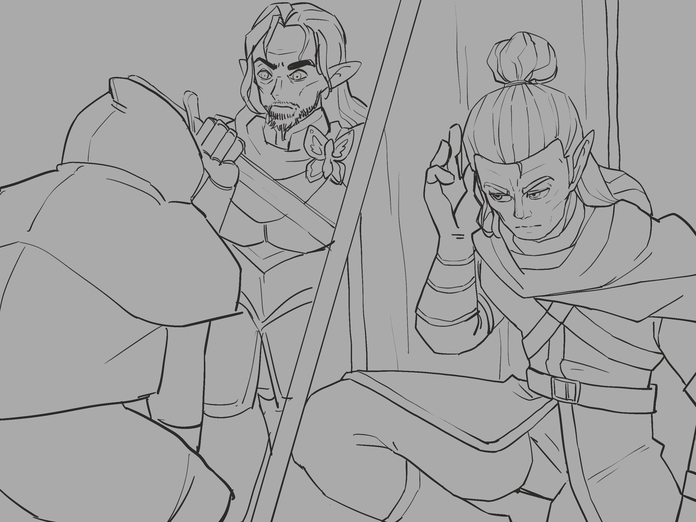
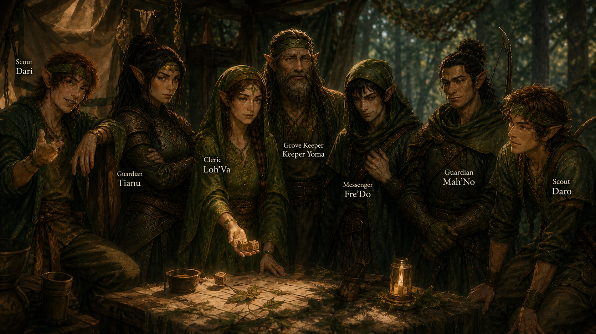

Chapter 4: The Evergreen Grove
Py'Par's Vision


Py'Par's Vision
15051.10.19
儘管前一場戰鬥，派琶扛了不少傷，他仍催促著大家趕緊往前進。下午時間，他打算先帶冒險者們到中繼站去休息，大約晚餐時間左右可以抵達。
與先前天真傻氣的他不同，派琶一路上安靜而果決，甚至在烏波判斷岔路的方向時，堅決走另一條路，事後冒險者也發現烏波原本想走的那條路下了大雨。一路上，派琶也警覺地發現了不少陷阱，但他也沒有逗留太久，解除危機後便趕路向前。一路攙扶著佛拉的羅特則將其中一個較沒有損毀的陷阱收了起來。
傍晚時間，冒險者的眼前出現了一顆偌大的樹。派琶帶著大家繞到了樹的後方，輕推開了樹幹上的暗門，帶著大家從樓梯一路向下走。
室內，七名穿著與派琶相似的妖精們正圍繞著一張方形的桌子討論著。「派琶，你來了。」當中唯一的長者深深看著派琶。「這些人是誰？」

派琶簡單介紹了冒險者，以及先前攻擊他們的芬尼爾信徒佛拉。中繼站的領導者悠馬長老，建議派琶與冒險者們先一同用晚餐，然後一起準備明天一早的撤離，但派琶說時間來不及了，吃飽後就得上路。最終，他決定帶上信使弗雷多以及斥侯雙胞胎兄弟達羅與達里兩人飯後上路，其餘人員則隔日與冒險者們一起出發。
巴茲看見戴著帽兜的信使弗雷多對他比出了一個手勢：那是只有他的族人才知道的手勢。他看了一眼，然後假裝沒看見。他知道這種事不該被其他人發現。
在派琶準備出發前，女巫洛伐拉著他，堅持要他先做占卜。他們依序使用了洛伐的木製骰子，洛伐解讀，要派琶小心，這趟旅程會有很多無法預料的事。
派琶等人離開後，洛伐很明顯鬆了一口氣。冒險者們好奇發生了什麼事。洛伐表示派琶以前沒有這麼緊繃，他一直都是蠻樂天、少一根筋的那種類型。他有預料到派琶終究會變成這個樣子，但他沒料到這麼快。冒險者也沒有多問了。
悠馬與兩名戰士：提阿努與馬諾收拾了餐桌後，繼續整理明天要帶走的東西，洛伐則和冒險者們多聊了些天，同時讓冒險者們也試著透過木骰占卜。冒險者們也詢問到了「月光狩獵會」，但悠馬長老對這個團體似乎不太熟悉，只知道和月神芬尼爾的信仰有些關聯。
不久後，巴茲聽見樓梯上傳來腳步聲，機警的他向外一看，斥侯達里竟然跑回來了。他表示他與派琶他們走到了一處危險的地段，派琶要他回這裡來，明天帶著大家通過。悠馬長老對此有些狐疑，但最終還是聽取了達里的話。接著，達里便走到廚房，搬了一打啤酒，準備開喝。巴茲對他這樣的行為感到困惑，隔日天亮就要出發，他還是斥侯，這樣真的可以嗎？但按照洛伐的說法，達里能力夠強，喝酒也不太會宿醉，所以悠馬長老對此並沒有禁止他。
羅特借住了中繼站的臥房睡了一覺，烏波則直接趴倒在桌上，不用睡覺的巴茲則警戒地面對著門口休息。
15051.10.20
天剛亮，中繼站的人們都準備好了。提阿努將地圖卷軸擺在桌上，請巴茲等等在路上負責搬運。除此之外，還有兩大袋布袋要讓冒險者們協助搬運。狀態復原的好很多的佛拉主動從羅特身上拿走其中一個布袋背起，烏波則背起較重的布袋。看著羅特兩手空空有點不知所措的模樣，巴茲分了一卷卷軸給羅特，讓他有點參與感。
上路後，達里雖然還是給人一種吊兒郎當的模樣，但他也精確地指出了正確的路線，讓冒險者們稍微安心些。
路途中，達里發現了有錢幣埋在土中，挖了出來。他說對常翠林來說，錢幣不太重要，因此讓冒險者們拿走了。
不久後，來到昨日達里與派琶等人分離的岔路。左邊的岔路上還有不少腳印。冒險者們一看，似乎是野狼的腳印，數量蠻多的。但其中幾枚腳印讓他們有點在意：明明像是野狼的腳印，卻有點古怪。馬諾驅身向前，在冒險者的耳邊低語，表示他覺得那是狼人的腳印，他最近才聽聞了有狼人出沒的行跡。結合野狼的兇猛與人形生物的聰明，狼人絕對不是好對付的。
隊伍中午左右來到一處大樹下稍作休息。洛伐從佛拉杯的布袋中拿出一些葉子，加上調味料，讓大家簡單吃了午餐。在羅特的詢問下，馬諾和她到附近嘗試獵捕一些動物來加菜。隨著馬諾精準的三發箭，三隻鳥從天而降，羅特撿起鳥，開始剝皮處理。最終，他再用火簡單烤過，讓大家（除了吃素的洛伐）加了點菜。
佛拉也私下和羅特說這一切結束後，他勢必不適合待在常翠林，畢竟身為月光狩獵會的一員，在樹林與生命之神涅西斯的組織內，怎麼看都格格不入，縱使他也曾信奉涅西斯，現在一切都不一樣了。他也問起羅特他們先前去過的那座溫暖卻又奇異的小鎮，認為自己也許適合在那裡過日子，作為一名守衛，保護大家。
午後幾個小時，在達里的帶領下，大家看見一處隆起的山丘，那正是常翠林的總部。達里將手杖在地上敲了幾下，山丘緩緩地開了一扇門，大家便走了進去。
烏波在提阿努的引領下，幫大家把背著的行囊都運到倉庫去；悠馬進入了一間像會議室的空間；洛伐找了其他的朋友談天去；達羅迎接歸來的達里，兩人一搭一唱；弗雷多則眼神示意巴茲，朝著總部後方走去。羅特詢問派琶關於他們在此休息的夥伴，賽博，的狀況，派琶說明賽博恢復的差不多了，等等就帶他們去見他。
羅特眼看馬諾鬼鬼祟祟的東張西望，又往總部後方走，悄悄地跟了上去。接著，他看見馬諾獨自貼著關上的後門，似乎在偷聽什麼。
巴茲走出了後門，看見弗雷多單膝跪地，朝著他行禮。
「我的家族世代服侍著你家族的所有人，就算你們內部分裂，你們的每一人都是我們服侍的對象。」弗雷多的發言讓巴茲嚇了一跳。
「我的父親呢？」巴茲詢問。他離開時大約是兩年前了。
「我很遺憾，我大約半年前離開。」弗雷多說。「那時正是在您父親的葬禮後。我看見了他的遺體，就算那是別人偽裝的，您的家族也將他的『死訊』公諸於世了。至於現在誰掌權，我不知道。」
「那你知道懷錶現在在誰那裡嗎？」巴茲詢問。
「依我所知，懷錶最後是在一名自稱偵探的金髮女子手中。派翠克他......死去了。」弗雷多說。「先說到著了，我們趕緊回去吧，消失太久容易起疑的。」
「Time is money.」弗雷多說完，便站了起來，準備推們走入。
眼看馬諾鬼祟的偷聽著，羅特利用傳訊術問了他「Buzz和你們那位信使夥伴是不是有什麼關係？」。馬諾回頭看了羅特一眼，便趕緊往反方向逃了。羅特聽見門另一側傳來了弗雷多說的「Time is money.」以及推門的聲音後，便也趕緊往原本來的方向奔逃。